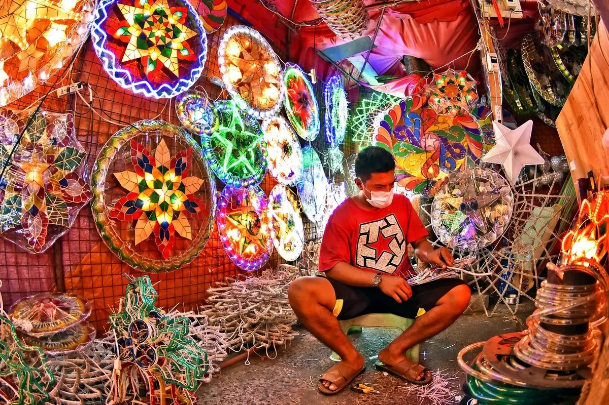
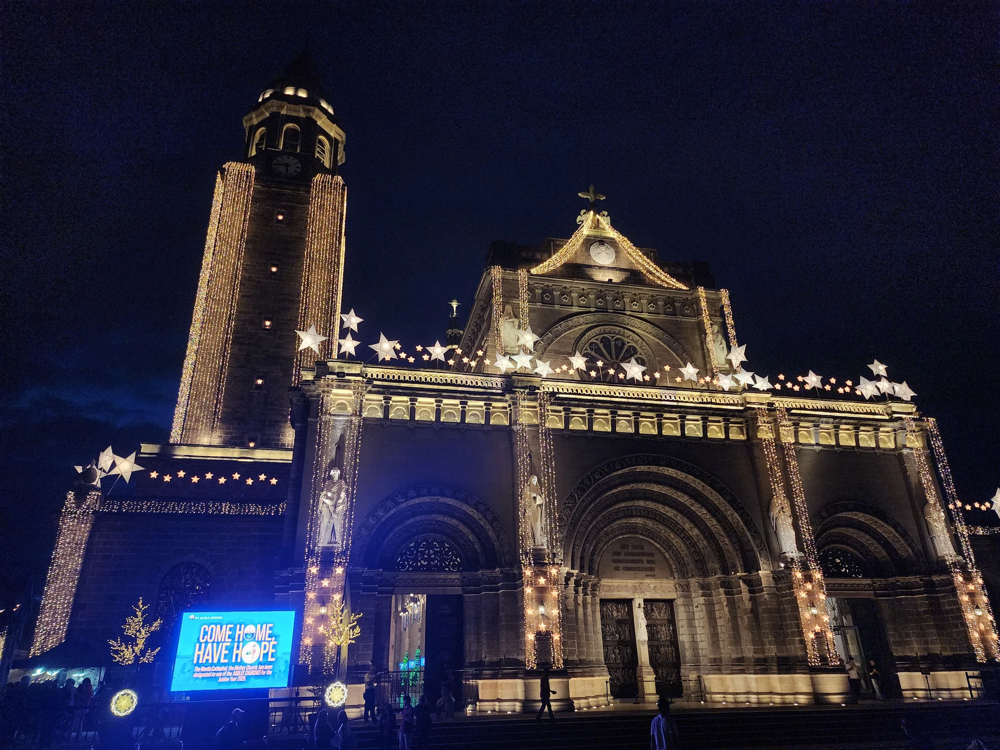
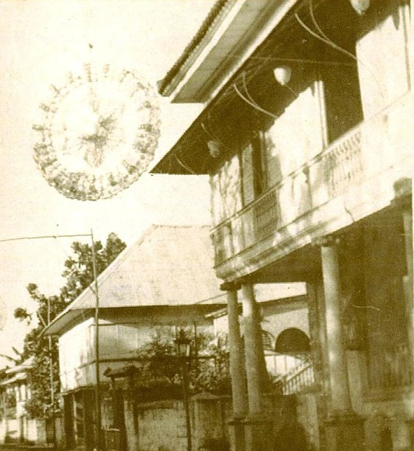
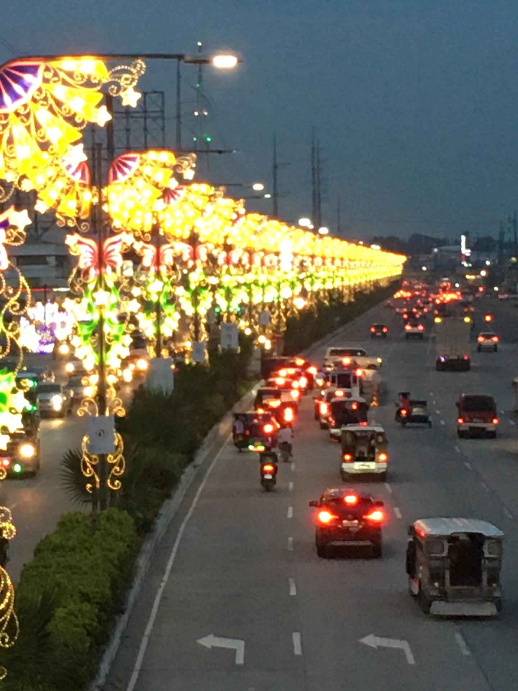
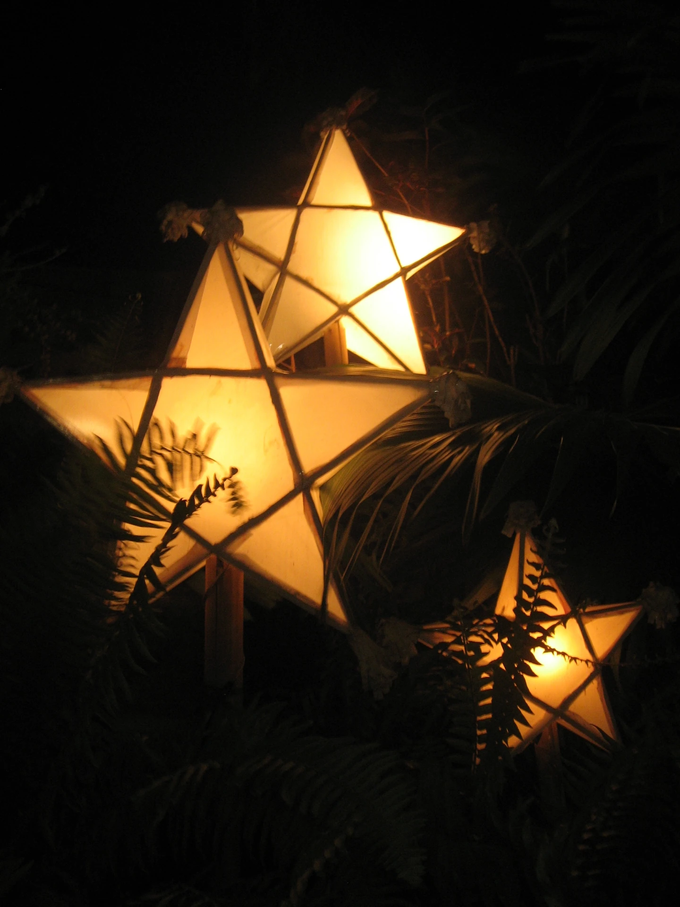
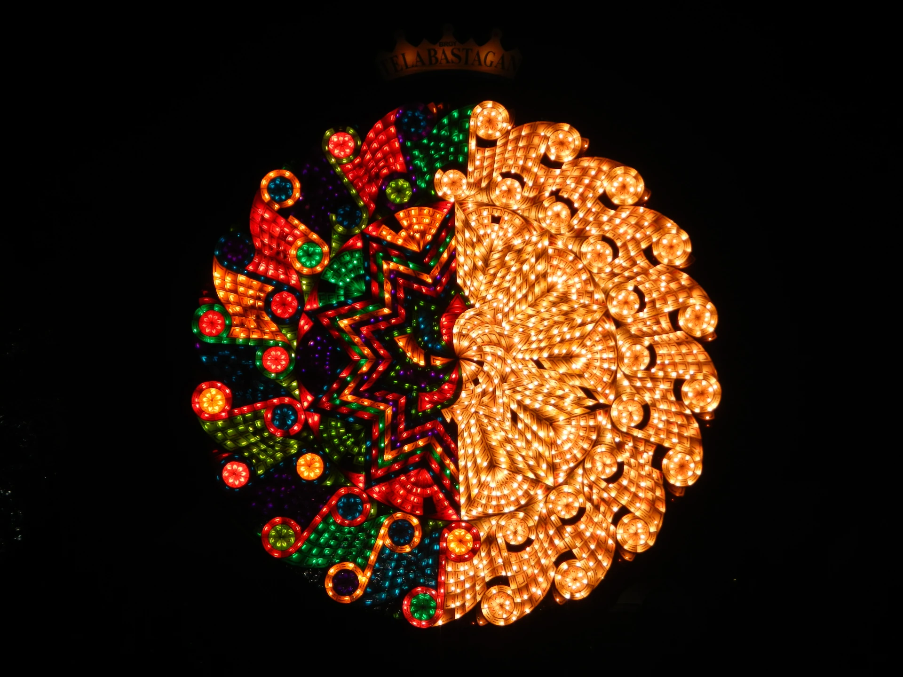

아직 펼치지 않은 카드빛을 들고 오는 사람들 · 3필리핀의 별등 ‘파롤’가게 가득 반짝이는 별등들. 필리핀 사람들은 왜 성탄에 별을 걸까요?반짝반짝 별 모양 등불이 엄청 많아! 어떤 별이 제일 예뻐?
12월 중순, 등불 경연의 밤필리핀 팜팡가주 · 산페르난도
필리핀의 별등 ‘파롤’
필리핀 팜팡가주의 산페르난도. 12월 중순 밤, 높이 6미터쯤 되는 별 등불 뒤에서 사람들이 쇠 통을 손으로 돌리면, 전구 수천 개가 음악에 맞춰 무늬를 바꿔요. 대나무 살 별에서 시작된 이 등불의 네 겹을 하나씩 들여다보세요.
필리핀에는 어른 키보다 훨씬 큰 별 등불이 있어. 뒤에서 사람들이 커다란 통을 빙글빙글 돌리면 불빛이 춤을 춘대! 같이 들여다볼까?
검수 전 시안이에요(기준서 1판). 장면에는 필리핀 신문과 지역 기록에 있는 것만 옮겼고, 집안에서 전해 오는 이야기는 그렇다고 밝혔어요. 상상은 ‘눈 감고 상상해 보기’에만 썼어요.
시안 확인용카드 단계 미리 보기
1
새벽 미사 가는 길
필리핀에서는 12월 16일부터 24일까지 아홉 날 동안, 한밤중이나 해 뜨기 전 새벽에 미사를 드려요. 필리핀 말(타갈로그어)로 ‘밤 미사’라는 뜻의 ‘심방 가비(Simbang Gabi)’예요. 스페인이 다스리던 1669년, 해 뜨기 전에 들일을 나가는 농부들을 위해 시작됐다고 전해요.
그 무렵 필리핀의 마을과 도시에는 밤을 밝힐 거리 등이 거의 없었어요. 사람들은 등불을 들고 성당에 가거나, 집 밖에 걸어 성당 가는 길을 밝혔어요. 등불과 가로등을 뜻하는 스페인어 ‘파롤(farol)’이 이 등불의 이름이 되었어요.

마지막 날인 12월 24일의 미사는 ‘닭 울음 미사(미사 데 가요)’라고 불러요. 미사가 끝나면 사람들은 노점으로 가서, 쌀로 만든 떡 비빙카와 푸토 붐봉을 사 먹어요.
필리핀에서는 성탄 전 아홉 날 동안 깜깜한 새벽에 성당에 가. 옛날엔 길이 어두워서 등불을 들고 갔대.
물어보기깜깜한 새벽길을 걸을 때, 너라면 무엇을 들고 갈래?
2
1904년 12월 26일, 산페르난도
1904년 8월 15일, 팜팡가주의 중심 도시(주도)가 이웃한 바콜로르에서 산페르난도로 옮겨 왔어요. 그해 성탄 다음 날, 산페르난도 콘순히 거리에 걸린 파롤이 사진으로 남았어요. 1901년 필리핀에 와서 교육국에서 일한 미국인 루서 파커(Luther Parker)의 사진 모음에 든 사진이에요.
사진 왼쪽 위를 보세요. 거리 위 높이 커다란 둥근 등불이 걸려 있어요. 가운데에서 바큇살처럼 무늬가 뻗고, 가장자리를 술 같은 장식이 빙 둘렀어요. 오른쪽 이층집 처마 밑에도 작고 둥근 등이 여럿 달려 있어요. ‘2022년’ 사진은 같은 거리가 아니라, 산페르난도의 큰 찻길을 따라 늘어선 오늘의 등불이에요.


스페인 시대의 파롤은 대나무 살에 일본 종이(파펠 데 하폰)를 붙여 만든 네모나 길쭉한 등이었어요. 대부분 집에서 만들었어요. 별 모양은 그 전부터 사랑받았지만, 파롤의 기본 모양이 된 것은 미국이 다스리던 때예요.
1893년, 필리핀의 국민 영웅으로 기리는 호세 리살(José Rizal)도 민다나오섬 다피탄에 유배되어 있으면서, 성탄을 제대로 지내고 싶다며 가족에게 일본 종이를 보내 달라고 편지를 썼어요.
120년도 더 전에 찍은 사진이야. 길가에 등불이 걸려 있어. 옛날 파롤은 무슨 모양이었을까?
물어보기‘1904년’과 ‘2022년’ 단추를 번갈아 눌러 봐. 무엇이 달라졌어?
3
루치아를 위한 큰 별, 1908
1908년, 산페르난도 산타루시아 마을의 소금 장수 프란시스코 에스타니슬라오(Francisco Estanislao)가 지름 3.6미터짜리 커다란 등불을 만들었어요. 성탄 전 9일 기도 행렬 ‘루베나스’에 쓰려고, 마을의 수호성인 성녀 루치아를 기려 만든 등불이었어요. 스웨덴에서 촛불 관을 쓰는 바로 그 성녀예요.
대나무를 등나무 줄기로 엮어 틀을 짜고, 아추이테(붉은 물을 내는 씨앗)로 물들인 코코넛 섬유를 씌웠어요. 불은 카바이드 등(물을 부으면 나오는 가스를 태우는 등)으로 밝혔어요. 산타루시아 마을의 다비드 집안과 키와 집안은 이것이 거대한 파롤의 시작이었다고 전해요.

‘루베나스’는 그 지역 말로 9일 기도(노베나)를 뜻해요. 아흐레 밤 동안 촛불을 켠 흰 종이 등불을 들고 마을 길을 돌았고, 성탄 전야에는 한밤 미사 전에 등불을 들고 읍내 성당으로 모였어요. 등불은 십자가, 별, 물고기, 천사, 양 모양이었어요.
1930년대에 에스타니슬라오의 사위 세베리노 다비드는 철사를 이어 붙여 별 모양 틀을 짜고 12볼트 전구 200개를 달았어요. 행렬 때는 버스 회사에서 자동차 배터리 20개를 빌려 불을 켰어요.
우리 집 창가에 별 하나를 건다면, 무엇으로 만들까요?
옛날 산페르난도의 소금 장수 아저씨가 어른 키 두 배쯤 되는 커다란 별 등불을 만들었대. 성녀 루치아를 위한 등불이었어!
물어보기대나무로 별을 만든다면, 막대가 몇 개 있어야 할까?
4
로터가 돌면
1957년, 버스 회사의 전기 기술 책임자였던 세베리노의 아들 로돌포 다비드가 새 장치를 선보였어요. 커다란 쇠 페인트 통에 머리핀을 붙여 전기가 닿는 자리(접점)로 삼고, 통이 돌 때마다 전구가 차례로 켜지고 꺼지게 한 ‘로터’예요. 그해 흰 전구 600개로 무늬를 그린 등불은 가장 뛰어난 등불로 뽑혔어요.
오늘의 거대한 파롤은 높이 6미터쯤에, 무게가 1톤까지 나가요. 경연 날 밤에는 사람들이 등불 뒤에서 커다란 쇠 통 같은 로터를 손으로 돌려, 전구 수천 개를 음악에 맞춰 춤추게 해요. 사진 속 등불의 네 겹을 하나씩 찾아보세요.
거대한 파롤의 네 겹을 가운데부터 바깥으로 하나씩 눌러 보세요.

텔라바스타간 마을의 거대한 파롤, 2012년 12월 15일 산페르난도 거대 등불 축제 · 사진: Ramon FVelasquez · CC BY-SA 3.0 · 위키미디어 공용
그림 위의 숫자나 아래 번호를 눌러 보세요.
네 겹을 다 찾았어요. 1908년 대나무 별 하나에서 시작된 등불이 이렇게 커졌어요.
1988년 에르네스토 키와는 12월에 잦아진 비에 견디도록 종이 대신 비닐을 씌우기 시작했어요. 2006년에는 머리핀이 떨어지자, 제프리 티오덴이 그 자리에 자전거 바퀴살을 쓰기 시작했어요.
커다란 통을 빙글빙글 돌리면 전구가 켜졌다 꺼졌다 하면서 별이 춤을 춰! 뒤에서 사람들이 손으로 돌린대.
물어보기그림 한가운데 동그라미를 찾아볼까? 그다음엔 별 모양을!
눈 감고 상상해 보기
12월의 밤, 넓은 마당에 사람들이 가득 모여 있어요. 조명이 꺼지자 웅성거림이 잦아들어요. 음악이 시작되고, 거대한 별 한가운데에 불이 들어와 바깥으로 물결치듯 번져 가요. 등불 뒤에서는 땀에 젖은 손들이 쇠 통을 돌리고 있어요.
눈을 감아 봐. 깜깜한 밤, 사람들이 잔뜩 모여 있어. 불이 꺼지고 음악이 시작되면, 커다란 별이 반짝반짝 춤을 춰!
나의 자리
올해 우리 집 창가에 별 하나를 건다면, 누구에게 길을 비춰 주고 싶나요?
너만의 별등을 만든다면 무슨 색으로 꾸밀래?
마음에 닿는 한 줄을 고르거나 직접 써 보세요. 한 줄을 남기면 이 자리의 도장이 찍혀요. 이 기기에만 저장돼요.
더 깊이
궁금한 칸만 펼쳐 읽어도 괜찮아요.
알고 보면
루치아와 파롤 1908년 첫 거대한 등불이 기린 성녀 루치아는, 스웨덴에서 촛불 관을 쓰고 행렬을 이끄는 바로 그 시라쿠사의 루치아예요.
전기가 오기 전 산페르난도에 전기가 들어온 것은 1927년이에요. 그보다 앞선 1908년의 첫 거대한 등불은 카바이드 등으로 밝혔어요.
전쟁과 전구 로돌포 다비드는 제2차 세계대전 때 미군 물자에서 찾아낸 110볼트 전구로 등불을 밝혔어요.
작은 로터 ‘점프’ 에르네스토 키와가 만든 작은 로터 ‘점프’는 등불의 무늬를 바꾸는 일을 도와요.
여섯 대째 에스타니슬라오에게서 시작된 등불 만들기는, 그 후손인 키와 집안에서 6대째 이어지고 있어요(2022년 기사).
바다 건너 팜팡가의 등불은 싱가포르, 러시아, 캐나다, 폴란드 같은 곳의 필리핀 대사관에도 걸렸어요.
기록마다 다른 점
첫 경연은 언제? 등불 경연 ‘리글리간 파룰’은 주도가 옮겨 온 1904년에 시작됐다는 이야기, 1908년이라는 이야기가 함께 전해요(필리핀 통신 2018). 1928년이라는 이야기도 널리 퍼져 있고(『푼토』), 인콰이어러 2012년 기사는 1931년이라고 적었어요.
옛 파롤의 모양 라플러는 스페인 시대의 파롤을 네모나 길쭉한 틀로 설명해요. 미국이 다스리기 시작하고 몇 해 뒤인 1904년, 산페르난도 사진 속 큰 등불은 둥근 모양이에요.
가장 이른 글 기록 지역 신문 『푼토』는 지금 남은 가장 이른 글 기록이 1930년 1월 잡지 『잉 미시오네로』에 실린 산페르난도 등불 경연 기사라고 적었어요.
누가 처음? 에스타니슬라오가 1908년에 거대한 파롤을 처음 만들었다는 이야기는 산타루시아 마을 다비드 집안과 키와 집안의 구술에서 온 것이에요. 어떻게, 왜 만들었는지 자세한 내용은 확인되지 않았어요.
로터를 만든 사람 로터는 흔히 로돌포 다비드가 만들었다고 하지만, 인콰이어러 2015년 기사는 그를 로터를 만들었다고 알려진 두 사람 가운데 하나로 소개해요.
파롤과 함께 읽는 말씀
파롤의 별은 동방박사들을 이끈 ‘베들레헴의 별’을 떠올리게 해요. 말씀은 뜻만 옮기고, 본문은 대한성서공회 개역개정으로 이어 드려요.
마태복음 2장 9~10절 동방에서 본 별이 박사들보다 앞서 가다가 아기가 있는 곳 위에 멈추자, 박사들이 매우 크게 기뻐했다는 말씀이에요.
이사야 60장 1~3절 일어나 빛을 비추라, 네 빛이 이르렀다는 말씀이에요. 나라들이 그 빛으로 나아온다고 해요.
직접 가 보기
확인한 날 · 2026년 11월 18일 · 바뀌기 쉬운 정보라 정기적으로 다시 확인해요
산페르난도는 마닐라 북쪽 팜팡가주의 중심 도시예요. 2025년(제117회) 경연은 12월 13일 토요일 밤, 쇼핑몰 로빈슨스 스타밀스에서 열렸어요. 열 개 마을의 등불은 이튿날부터 2026년 1월 1일까지 팜팡가 여러 곳에서 전시됐고, 성탄 전야에는 시청과 대성당 사이에 섰어요.
2026년 경연 날짜는 아직 공식 발표를 찾지 못했어요(2026년 11월 18일 기준). 떠나기 전에 산페르난도 시청 안내를 꼭 살펴 주세요.
거대한 파롤의 네 겹 금박
‘로터가 돌면’에서 거대한 파롤의 네 겹과 전구를 모두 찾아 읽으면 카드에 금박이 입혀져요.
거대한 파롤 속 여섯 곳을 모두 찾아 읽기
창가의 별 하나 채색
둘 가운데 하나만 해도 카드가 채색돼요.
‘루치아를 위한 큰 별’에서 우리 집 별의 재료 고르기
아이와 함께 ‘영화처럼 보기’를 끝까지 보기
근거 보기 (17)
- 라플러(Nigel Tan): PH X'mas symbols, practices trace roots to Spanish era — ‘파롤(farol)’(등불·가로등), 거리 등이 거의 없던 스페인 시대, 성당 가는 길을 밝힌 등불, 대나무와 일본 종이(papel de japon), 네모·길쭉한 틀, 대부분 집에서 만듦, 미국 시대에 별이 기본 모양, 1893년 10월 리살의 편지
- 필스타(Dolly Dy-Zulueta), 2023.12.15: 심방 가비 — 1669년, 해 뜨기 전 들일을 나가던 농부들, 12월 16일부터 아홉 번의 한밤·새벽 미사, 12월 24일 미사 데 가요, 미사 뒤 노점의 비빙카와 푸토 붐봉
- 알레테이아(Simone Lorenzo-Peckson), 2019.12.24 — ‘심방 가비’는 ‘밤 미사’, 17세기 수도사들, 1908년 에스타니슬라오, 베들레헴의 별
- 산페르난도 시청: City History — 1904년 8월 15일 주도 이전
- 인콰이어러 라이프스타일, 2022.10.27: Colors in genes of lantern makers — 소금 장수 에스타니슬라오, 1908년 지름 3.6m 등불(루베나스, 산타루시아의 수호성인 루치아), 대나무·등나무·아추이테로 물들인 코코넛 섬유·카바이드 등, 사위 세베리노 다비드(1930년대 철사 별, 12볼트 전구 200개, 라 마요르카 버스의 배터리 20개), 1927년 전기, 1957년 ‘젊은 다비드’(라 마요르카 전기 책임자)의 로터(페인트 통·머리핀, 흰 전구 600개, 그해 최고), 2차 대전의 110볼트 전구, 1988 에르네스토 키와의 비닐, 2006 제프리 티오덴의 자전거 바퀴살, 점프, 6대(키와 집안)
- 인콰이어러, 2015.12.2: Giant lanterns outlive patrons — 1908년 산타루시아 푸록 6, 첫 거대 등불 장인 에스타니슬라오, 루베나스(9일 새벽 미사 행렬), 라 마요르카 버스 회사의 배터리, 로터를 만들었다고 알려진 두 사람 가운데 로돌포 다비드, 1957년
- 인콰이어러(Tonette Orejas), 2012.12.14: ‘Lubenas’ is alive in Angeles City — 9일 기도 행렬, 촛불 켠 흰 종이 등불의 모양들
- 인콰이어러, 2012.12.4: 11 giant lanterns compete in 81-year-old festival — 1931년에 시작된 축제, 로터는 전구가 음악에 맞춰 춤추듯 켜지게 하는 지역 발명
- PNA(필리핀 통신)·PTV, 2018.12.7 — 바콜로르에서 온 등불 행사, 1904·1908년 설, 성탄 전야 한밤 미사 전 읍내 성당으로 모인 등불, 싱가포르·러시아·캐나다·폴란드 대사관의 등불
- 선스타(John Elmer Ubado), 2017.12.12 — 산페르난도 파롤의 네 요소(탐부르: 둥근 가운데 · 시쿠시쿠: 별 같은 안쪽 고리 · 팔리분분: 둘을 감싸는 무늬 · 푼테타스: 바깥 고리), 로터, 색 비닐·일본 종이·카피스
- AFP·RTE, 2025.12.19 — 높이 6m에 이르는 손으로 만든 등불, 무게 1톤까지, 경연 등불의 50W 전구 1만 2천 개, 손으로 돌리는 쇠 통 로터
- 푼토(Punto): In search of lantern making history — 다비드·키와 집안의 구술(1908년, 자세한 내용은 모름), 1928년 설, 가장 이른 글 기록 1930년 1월 『잉 미시오네로』
- 마닐라 불레틴, 2022.12.4 — 1893년 다피탄의 리살이 성탄을 제대로 지내려고 일본 종이를 부탁한 편지
- 바탕가스 역사(batangashistory.date) — 루서 파커(1901년에 와서 1931년까지, 교육국 장학관), 필리핀 국립도서관의 사진 모음
- 선스타, 2025.12.2: 제117회 경연(12월 13일, 로빈슨스 스타밀스), 열 개 마을, 2026년 1월 1일까지 전시
- 선스타, 2025.12.14: Barangay Bulaon wins 2025 GLF competition — 토요일 밤 로빈슨스 스타밀스에서 열린 경연, 열 개 등불
- 로빈슨스 몰, 2025.12.22: 거대 등불 전시 — 2025년 12월 14일~2026년 1월 1일, 12월 24일 시청과 대성당 사이
그림·사진·소리 출처
‘처음 만나는 기독교 문화’의 깊은 카드예요. 사람이 나오는 사진은 카드 앞면 사진만 썼어요. 카드 단계와 남긴 글은 이 기기에만 저장돼요.